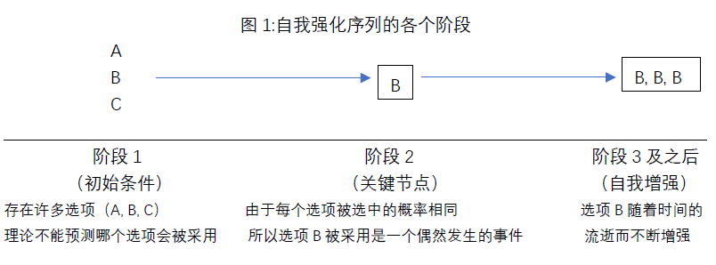
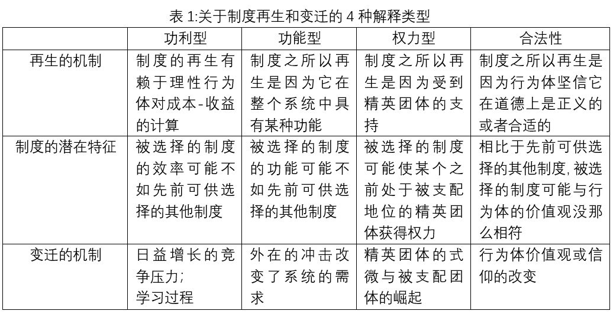
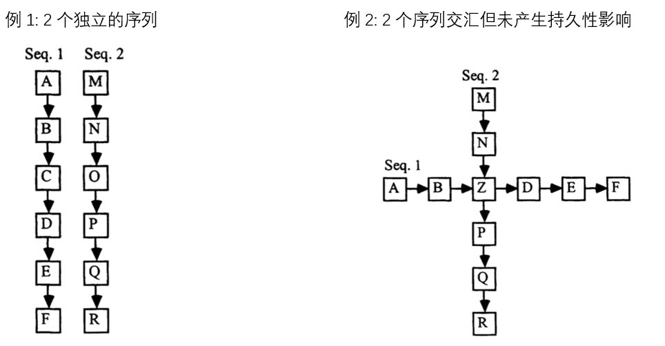
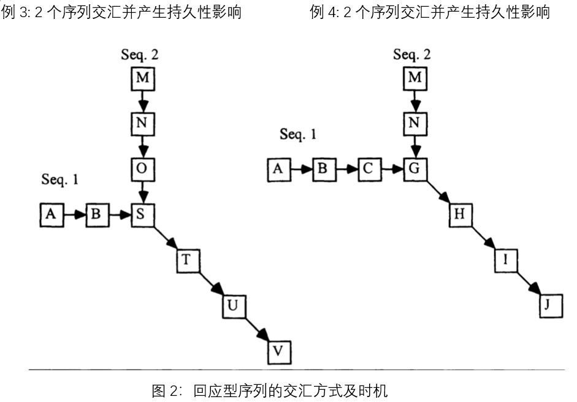

收录于合集
文献来源： Mahoney, James. “Path Dependence in Historical Sociology.” Theory and Society 2 9.4 (2000): 507-548.
作者简介： 詹姆斯·马洪尼（James Mahoney），1997年获得美国加州大学伯克利分校博士学位，现为美国西北大学社会学系和政治学系双聘教授。他的研究兴趣为比较历史分析、定性研究方法、政治发展和拉丁美洲研究，其代表性著作有Advances in Comparative-Historical Analysis (2015; coedited with Kathleen Thelen)；A Tale of Two Cultures: Qualitative and Quantitative Research in the Social Sciences (with Gary Goertz; 2012) （中文版《两种传承：社会科学中的定性与定量研究》）；Colonialism and Postcolonial Development: Spanish America in Comparative Perspective (2010); Explaining Institutional Change: Ambiguity, Agency, and Power (2010; coedited with Kathleen Thelen)。Mahoney获得了来自美国社会学协会（ASA）和美国政治科学协会（APSA）的许多奖项，并曾担任美国政治科学协会- 历史与政治分会的主席，以及美国社会学协会- 比较历史分会的主席。个人主页见：https://www.sociology.northwestern.edu/people/faculty/core/james- mahoney.html
经济史学家认为，路径依赖为经济学领域的研究开启了一扇全新的大门。受经济史学家的影响，历史社会学家也认为，许多重大社会现象只能通过路径依赖来解释，而历史社会学领域本身也为研究路径依赖提供了非常合适的分析工具。但是，该领域学者对于路径依赖的定义，却仍然停留在“历史很重要”、“过去影响未来”等模糊不清的概念上，这种模糊的定义让学者无法准确地理解路径依赖的真正含义，仅仅将其视为一种从当前的结果往前追溯原因的分析模式。有鉴于此，在本篇文章中，马洪尼对路径依赖做了清晰的定义，并区分了 2种类型的路径依赖 ： 自我强化型序列 和 回应型序列 。
对路径依赖的概念化
马洪尼认为，所有的路径依赖分析都有三个典型特征： 1.在历史事件序列里，事件发生的顺序很重要，越晚发生的事情可能越难对结果产生影响。 2. 早期发生的事件具有偶然性，无法根据它之前的或初始的历史条件来加以解释，这就排除掉了根据初始条件来预测最终结果的可能性。3. 一旦偶然性的历史事件发生，就会产生一种惯性，使之后发生的事件朝着某一特定的结果发展。 根据上述3个特征，马洪尼强调大多数比较历史分析的研究——包括斯考切波的《国家与社会革命》——都没有明确地采取路径依赖的视角，而是通过变量之间的组合来解释案例之间的相似性与差异性，这些变量被假定对结果有影响，而没有考虑到这些变量可能具有的历史偶然性。如果学者将这类研究视为路径依赖，那他们就错误地将路径依赖等同于所有强调过去很重要的历史解释了。
路径依赖的类型一：自我强化型序列
( self-reinforcing sequences)
在这种序列里，某种制度模式一旦被采用，就会呈现出经济学领域所说的“报酬递增”（increasing returns）现象，随着时间的流逝，这类制度模式就越来越难以被改变，即使存在其他更有效率的可替代选项。因此，制度总是具有持久性，无法被轻易地改变。不过，制度的产生过程与再生过程并不一样。
1. 制度的产生
制度的产生与关键节点（critical junctures）有关。 关键节点指的是从一些选项中选择一个特定的制度安排。 这类节点之所以关键，是因为一旦选择该选项，就难以回到存在其他替代性选项的初始条件中去了。 关键节点总是通过反事实分析的方法来加以确定，研究者通过展示一个替代性选项被选择之后会产生与当前完全不同的结果来强调关键节点的重要性。除此之外，在关键节点进行的选择是具有偶然性的，这意味着没有理论能够预测和解释最后的结果。下图展示了自我强化序列的各个发展阶段。

马洪尼指出，在实际的研究中，研究者会将那些无法用现存理论解释的事件视为偶然发生的现象，例如一个领导人被暗杀或个人的特殊选择偏好等太过于具体以至于无法被理论所容纳的小事件，或是看起来具有随机性的自然灾害或股市波动等大事件。同时，研究者也会将某一结果视为偶然，如果它与通常用于分析该类结果的理论预期不相符（虽然这种偶然发生的结果可能与某些潜在的其他理论相符合）。例如，经济史学家会认为一项低效率的技术（如QWERTY打字键盘）被采用就具有偶然性，因为这与新古典经济学的理论预期相矛盾。
2. 制度的再生
**
**
在路径依赖中，制度再生的原因与制度产生的原因并不一样，即使那些使制度得以产生的条件不复存在，制度也依然能存续或者说“被锁定”（locked- in）在固定的发展模式之中。在社会学中，用来解释制度再生的理论框架可以被总结成以下4类，分别是功利型解释、功能型解释、权力型解释以及合法性解释。如表1所示，每一类解释都对应着不同的制度再生机制，以及可能使不断自我强化的制度发生变迁的机制。

功利型解释： 经济史学家认为，理性行为体选择让制度得以存续的原因是因为改变制度的成本大于其收益，而在历史社会学领域，大部分坚持采用理性选择视角的学者并没有发展出有关路径依赖的解释。他们认为，在理性选择的逻辑下，制度的产生并不是偶然的，而是因为满足了特定行为体的个人利益。因此，大多数采用功利型视角来解释路径依赖的研究都出自于经济史学家之手，而非历史社会学家。在功利型解释框架中，当制度无法再满足行为体的个人利益时，制度的变迁就发生了。参照市场理论的逻辑，制度变迁的原因可能是日益增长的竞争压力，以及理性行为体的学习过程，这种学习过程能帮助理性行为体预计到未来的消极后果并促使他们宁可付出短期的成本代价也要做出改变。然而，在市场之外，关于制度变迁的功利型解释并没有那么盛行，因为在现实世界中的理性行为体很难对成本和收益进行精确地计算，而且社会行为体也不太可能像经济行为体那样根据长期的成本- 收益计算来做出决策。所以在市场之外的其他领域，由功利型逻辑支撑的制度，其路径依赖的效应更为持久。
功能型解释： 与基于理性算计的功利型解释不同，功能型解释是从制度在其所处的整个系统中所发挥的功能来解释制度的再生。要注意的是，马洪尼认为，许多采用功能主义视角的学者经常误认为某个制度最初的产生也是因为它在系统中所具有的功能，然而，在路径依赖中制度的产生具有偶然性，在系统中发挥的作用或许能有助于解释制度的再生，但是它并不是制度产生的原因。如同功利型解释一样，随着时间的流逝，从长期来看被选择制度的功能可能不如先前可供选择的其他制度。Immanuel Wallerstein的巨著《现代世界体系》(Modern World System)就提供了在过去五百年中资本主义世界体系是如何不断自我强化的功能型解释。
权力型解释： 一旦制度得以产生，与功利型解释类似，学者在采用权力型视角来解释自我强化的路径依赖时，会假定行为体是通过对成本和收益的理性计算来做出决策。然而不同的是，权力型视角强调制度会导致成本和收益的不平均分配，制度的存在并不符合所有行为体的利益，但只要受益于现存制度的精英有足够的实力来维持该制度，它依然能存续。不过值得注意的是，由于制度的产生具有偶然性，因此无法从之前的权力分配格局来加以预测，这也意味之前处于被支配地位的团体可能从新制度中获益。William Roy的《社会化资本：美国大型工业公司的兴起》(Socializing Capital: The Rise of the Large Industrial Corporation in America（1997）)就为19世纪30年代之后美国大型私营公司的发展提供了一种权力型的路径依赖解释。
合法性解释： 在此种解释里，制度的再生是基于行为体对何为正义的主观认知及信仰。当行为体认为制度具有合法性（不管是主动的道德认同还是被动地接受现状），制度就能存续，这反过来又进一步强化了它的合法性。Karen Orren的《迟来的封建主义：美国的劳工、法律和自由主义发展》（Belated Feudalism: Labor, the Law, and Liberal Development in the United States）（1991）是采用合法性视角来解释制度存续的典型作品。
路径依赖的类型二：
回应型序列（reactive sequences）
回应型序列是一连串按时间顺序排列且彼此之间具有因果联系的事件链条。在该序列中的每个事件既是对前一事件的回应，也是导致后一事件发生的原因。 早期发生的事件对最后的结果而言尤为重要，因为细微的变化能随着时间而不断积累，最后对结果造成重大影响。不同于自我强化型序列通过再生机制来强化早期事件对后续发展路径的影响，回应型序列中的早期事件是通过触发一连串紧密相连的回应序列来推动后续的发展，在这其中会存在巨大的反冲过程（backlash processes）来改变或者扭转早期事件的影响，使整个系统朝着新的方向发展。
1. 如何确定回应型序列的起始点？
回应型序列中，存在一个非常重要的问题就是如何选择该序列的起始点，因为选择任何一个事件作为分析的起点都可能显得武断，如果对此没有一个判断的标准，研究者容易陷入无限回溯（infinite regress, 即不断地往前追溯事件发生的原因）的陷阱中去，这是一个很常见的问题，但是很少有人能提出解决的方法。马洪尼指出，在回应型的路径依赖序列中，作为起始点的事件往往是2个独立序列的交汇点，被历史社会学家称之为”时机（conjuncture）“或“断裂点（breakpoint）”，这一时机何时会到来是无法被理论所预测的，因此具有偶然性。图2展示了2个独立序列的不同交汇方式以及交汇的时间点是如何对后续事件产生重大影响（各个字母代表不同的事件）。


例1显示的是2个独立的回应型事件序列，二者没有产生交汇，因此每一序列仍然沿着自身原有的轨迹发展。在例2中，2个独立的序列有所交汇并产生了z事件，但是z事件之后，这2个序列依然按照各自原有的轨迹发展，因此，作为时机（断裂点）的z事件并没有对这2个序列产生持久性影响。与之相反，例3和例4展示的是能对原有序列产生持久性影响的时机（断裂点），具体的表现是改变了这2个序列的发展轨迹，使之朝着与之前完全不同的轨迹发展。例3与例4的差别在于2个序列交汇的时间点（temporal point）并不一样，其产生的影响也有所不同，由此可见时间的重要性。
2. 回应型序列的不可预测性及其包含的固有次序
然而，即使能确定回应型序列中的起始点，研究者也可能难以直接预测和解释最后的结果，但是对存在于起点和结果之间的相互关联的事件进行逐步地解释和预测则是可行的，这也是研究路径依赖的学者们所要分析的主要对象。在此，历史叙事（historical narratives）成为了一个有用的工具，它依照清晰的时间顺序来对社会现象进行描述，帮助研究者们详细地梳理各个事件之间的因果关系，并运用反事实分析的方法来进行检验。
在回应型序列中各个事件之间存在着紧密的因果联系，这种因果联系被称之为“固有次序”（inherent sequentiality）。然而，如何确定这种因果联系？这是历史社会学家近年来亟待解决的问题。马洪尼认为固有次序具有三个特征： 1.某一事件往往是其后续事件得以发生的必要或充分条件 ；2.允许研究者对起始事件与最终结果之间的因果机制进行深入细致的分析。 在回应型序列中的每个中间事件都代表着某种连接起点与终点的因果机制，同时这些因果机制又将所有事件串连起来。 当然，对因果机制的识别需要借助于现有的理论框架。 3. 事件之间的排列具有明确的时间顺序 ，这也是为什么回应型序列看上去在遵循一个固有的逻辑。对于很多社会科学研究者而言，确定变量之间的时间顺序是一个艰巨的任务，但对于历史社会学家而言，可以借助历史叙事这一工具来克服这个问题。
马洪尼认为， 许多从路径依赖视角对回应型序列进行分析的研究都喜欢考察那些异常案例，即作为断裂点的偶然性事件改变了该序列原有的发展轨迹并最终导致结果与其它类似的案例相比出现偏差 。比如，研究美国例外论的学生就从美国建国之初的一些偶然性事件来解释为何美国没有社会主义。除此之外，Jack Goldstone在The Problem of the ‘Early Modern’ World（1998）一文里对英国工业革命的分析也是体现路径依赖的回应型序列的典型代表。
总结
受困于历史社会学界对路径依赖这一概念的模糊理解和使用，马洪尼在本文中为路径依赖提供了一个清晰的定义。在他的定义里，事件发生的时间非常重要。那么哪种社会现象最适合用路径依赖的视角来分析呢？马洪尼认为是那些只发生过一次并具有重大影响的事件，例如英国的工业革命。因为在初始条件相似的情况下，这些案例里存在一些偶然性的历史事件导致其最后的结果与其他案例相比出现偏差。
马洪尼承认，路径依赖的研究与历史社会学领域试图对解释案例间的差异性和相似性的因果变量进行宏观概括的研究存在一定的冲突，这种冲突主要体现在分析起点的选择上。因为 研究路径依赖的学者可能努力寻找那些从初始条件无法预测结果的历史时间点，而主流的比较历史分析学者则试图将分析的起点放在选定的因果变量存在的时间范围内，避免使最后的结果看起来像是偶然发生的。 二者在这一问题上的分歧表明， 历史社会学家需要发展出更为客观的标准来决定什么时间点可以作为分析的起点。 对于自我强化型的路径依赖序列而言 ，马洪尼建议是 选择那些离关键节点很近但在其之前的时期 ；而 对于回应型的路径依赖序列而言分析起点的选择更为困难 ，因为研究者可能会陷入无限回溯的陷阱中去，对此马洪尼认为 可以通过与其他案例做比较来加以确定。
编译：施 榕
审读：杨端程
编辑：吴温泉


政文观止
微信扫一扫赞赏作者 __赞赏
已喜欢，对作者说句悄悄话
取消 __
发送给作者
发送
最多40字，当前共字
上一页 1/3 下一页
长按二维码向我转账
受苹果公司新规定影响，微信 iOS 版的赞赏功能被关闭，可通过二维码转账支持公众号。